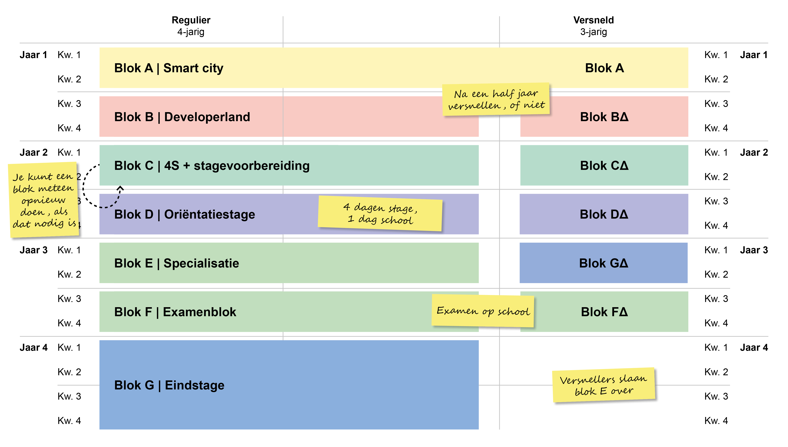

Intro
Bij software development leer je codeeren in codes zoals php html c# en php
Tijdens deze opleiding zul je in een span van 3-4 jaar hier over leren en meerdere anderen gerelateerde onderwerpen/programeer talen.

Het Rooster

In de eerste heb je een best rustig rooster met soms een vrij middag of ochtend. Je hebt per week rond de 20 uur aan les tijd.
Dit rooster is van het 1ste jaar
Vakken
Web development
Bij web development leer je over html, css en php en hoe je ze kan toepassen om een website te maken.
Native development
Bij Native leer je werken met python en C# om console apps te maken en UWP applicaties.
Praktijk
Bij praktijk gebruik je wat je leert bij vooral web en native om een werk sfeer na te bootsen terwijl je applicaties maakt voor opdracht gevers.
Praktijk Ondersteuning
Bij het vak Praktijk Ondersteuning leer hoe je goed samen kunt werken tijdens het programmeren via de Agile" of "Scrum" methode en het gebruik bijvoorbeeld van GitHub.
Digitale vaardigheden
In blok A krijg je digitale vaardigheden hier bij leer je over het gebruik Word, Powerpoint, Excel, en kennis heb over de digitale wereld, Maar voor veel van ons was dit gewoon herhaaling.
Kernvakken
En je krijgt ook de standaard vakken die je bij elk MBO krijgt.
- Nederlands
- Engels
- Rekenen
- Burgerschap
Blokken werking
Bij ons in Curio heb je standaard 8 blokken in heel je opleiding. Dit zijn er dus 2 per jaar, Deze blokken werken soort gelijk met periodes van de middelbare alleen heb je er hier maar 2 van per jaar in tegenstelling van de standaard 4 per jaar van de middelbare. Tijdens 3 van deze blokken ga je op stage.
Vernselling
Als je in blok A bijzonder goed bezig bent en een goede houding hebt krijg je de mogelijkheid om je opleiding te versnellen.
Deze versnelling is in de vorm van 2 blokken minder in je opleiding of toe wel een jaar minder.
Je mist in dit geval 1 blok aan stage en het blok les dat je mist wordt verspreid over alle anderen les blokken.
Docenten
Elton
Web
Marc
Praktijk
Wicher
Burgerschap, Algo, Native
Bart K
Praktijk
Michel
Native, Rekenen
Bart R
Native
Joep
Nederlands
Krist
Praktijk-Ondersteuning
Michael
Praktijk
Mijn Mening
Ik vind het op Curio heel gezellig, Er hangt altijd een goed sfeer. Ik heb veel interesse in het leren codeeren en soort gelijke onderwerpen en dat is hier tot nu toe geweldig gegaan. Daar bij zijn de meeste docenten altijd bereid om je te helpen en daar boven op zijn ze leuk om even mee te kletsen.